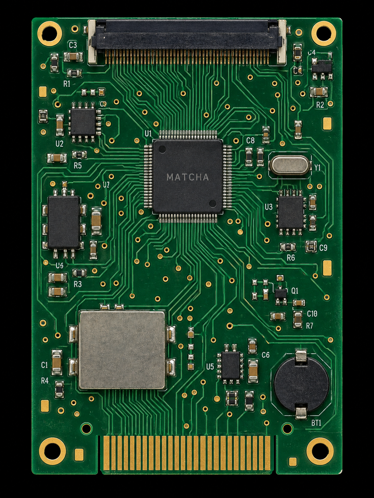
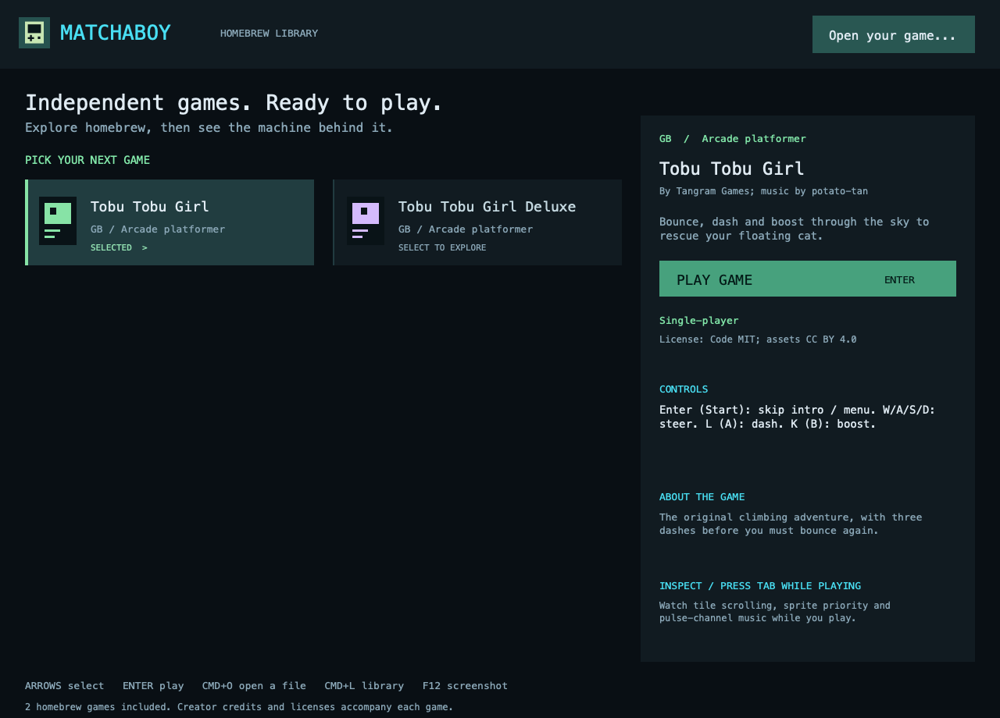
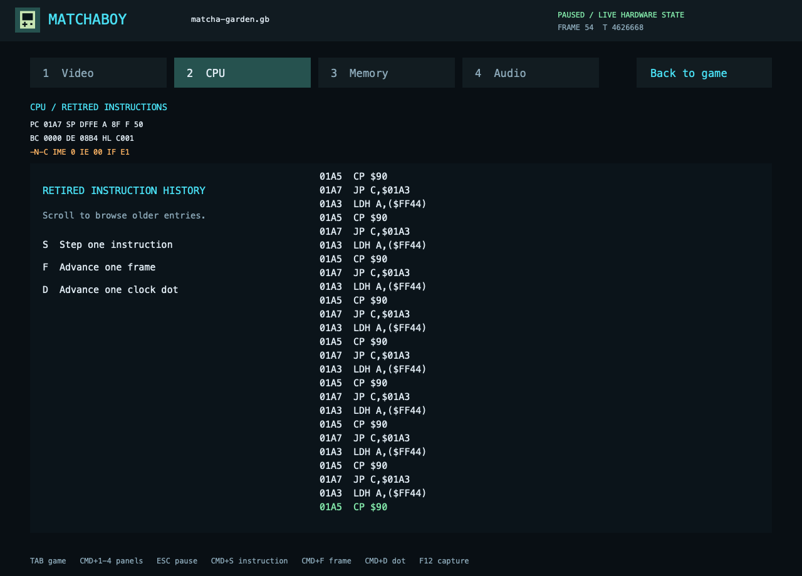
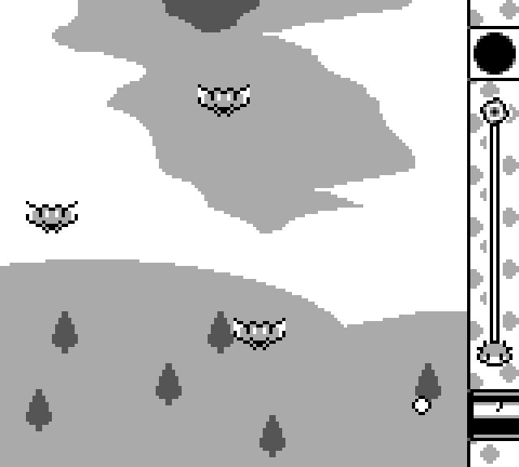
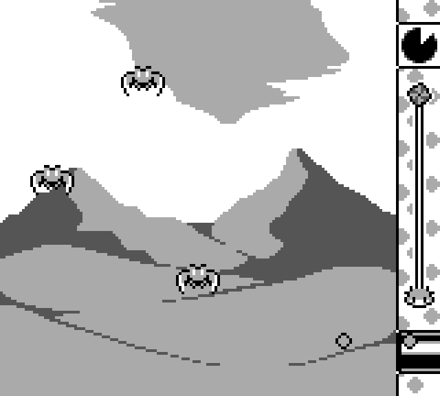

macOS
Apple Silicon · macOS 13+
Download for MacM1 or newer. Follow the first-open guide; this app is not Apple-notarized.

GAME BOY. GAME BOY ADVANCE.
The games you love. The hardware you can explore.
A little machine with a whole world inside.
BENEATH THE SURFACE
Pull back the layers.
Follow the story of a single pixel.
An interactive illustration of the hardware. Open the app’s Inspector for real game state.
FROM THE CIRCUIT TO YOUR SCREEN
Open a game. Find your rhythm.
Make the controls your own.


Balanced, classic, or completely yours. Every key can find its place.
THE LINK-CABLE FEELING
Host a session. Bring player two.
Go for one more rematch.
Join with the host’s local IP, port, and room code. Both players use the same app version and compatible game.
Use a reachable VPN address or UDP port forwarding. There is no automatic matchmaking or relay.
Requires a compatible link-enabled game. The included Tobu games are single-player.
SMALL GAMES. BIG HEART.
Two indie adventures, ready in your library.
Made by Tangram Games.


Games by Tangram Games, music by potato-tan. Artwork licensed CC BY 4.0. Full credits.
YOUR NEXT LITTLE OBSESSION
A whole world of little pixels. One download away.
Apple Silicon · macOS 13+
Download for MacM1 or newer. Follow the first-open guide; this app is not Apple-notarized.
Windows 10 / 11 · x64
Download for WindowsUnzip and open Matchaboy.exe. Windows may show an unsigned-app prompt.
x64 · X11 / XWayland
Download for LinuxKeep assets beside Matchaboy. Requires the X11 and Xft libraries.